Unveiling Universal Knowledge: A Tour of the Library of Unwritten Papers
May 29, 2024
Introduction to the Total Library
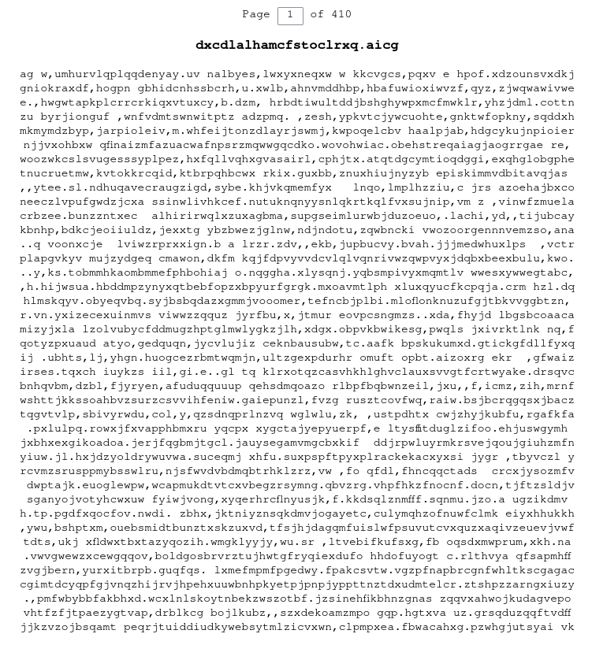
Let heaven exist, though my place be in hell. Let me be outraged and annihilated, but for one instant, in one being, let Your enormous Library be justified.
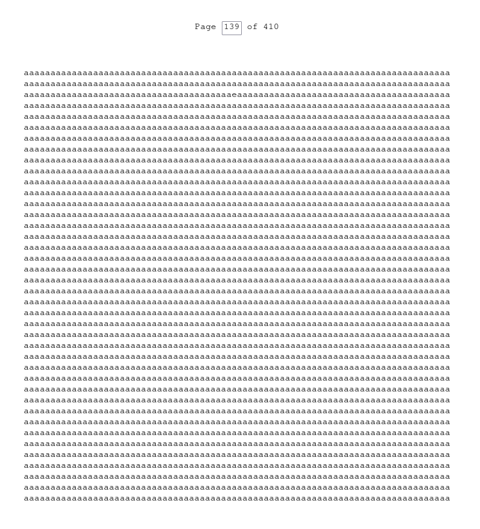
Categorization Systems
1
1
1
1
1
1
1
1
1
1
Multiversal Library of Alexandria
1
1
1
1
1
Library of Unwritten Papers
1
Works in the Library: Background
- we group works by similarity to avoid too much repetition
- exactly where we set this cutoff is a matter of great debate
- research: each researcher doesn’t publish about 100 papers per year
- books: the number of unpublished books annually is on the order of the human population
- poetry: estimates say 90% of the human population fails to publish a poem every year
- poetry: some outliers don’t write up to hundreds of potential poems a day
Works in the Library: Examples
- Investigating the potential of using discarded avocado pits as a sustainable source of activated carbon for water purification
- Kinetic analysis of the thermal degradation of polypropylene-based disposable cutlery under simulated picnic conditions
- The impact of different background music genres on average time spent on hold with customer service
- Seasonal variations in the accumulation of dust on top of refrigerators in single-person households
- Comparative analysis of the bounce height of various brands of generic tennis balls
- Survey of preferred car air freshener scents among morning commuters in Toledo, Ohio
- Observational study of the relationship between shoe size and time spent browsing Instagram
Unwritten Medieval Manuscripts
- Giovanni di Zaffira, Arbor Vitæ et Sapientiae (The Mystical Tree of Life and Knowledge)
- Isotta Nogarola, De Spiritibus Aetheriis (On the Ethereal Spirits and Their Powers)
- Mary Sidney, Hypatia’s Lament The Lost Wisdom of Antiquity Reclaimed
- John Dee, Nocturnal Utopias Visions of Perfected Realms in the Hours of Darkness
- Bonaventura d’Orta, Omnia Septentrionalis (All Things of the Northern Lands)
- Thomas Browne, Codex Veritas: The Treatise on Universal Harmony
- Christopher Smart, Jubilate Machina: A Poetic Ode to Artificial Intelligence and Divine Innovation
Notable Sections: Early Death
Notable Sections: Blasphemy
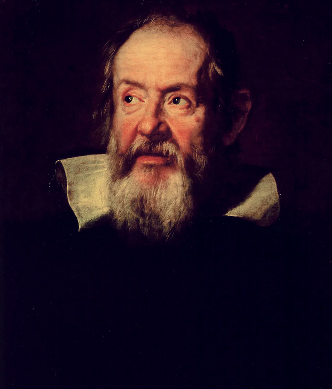
- “De Universali Mundi Harmonia”
(On the Universal Harmony of the World)
~Galileo Galilei, n.w. 1635-1640
“De Veritate et Luminibus Gnosticis”
(On Truth and Gnostic Lights)
~Rene Descartes, n.w.c. 1640

“Threnodia Dei Natura”
(The Lament of Nature’s God)
Erasmus Darwin, n.w. 1802
Let not our quest for knowledge blind the eye,
To beauty’s whisper and to wonder’s sigh,
May we recall, in moments awed and still,
The silent grandeur of Your ancient will.
Notable Sections: Pornography
Notable Sections: Unfeasible/Illegal
Notable Sections: Unfeasible/Illegal
- The Neurological Impact of Complete Sensory Deprivation on Infants: A Longitudinal Study
- The Effects of Prolonged Exposure to Vacuum on Human Physiology: A Space-Based Experiment
- The Impact of Nuclear Warfare on Global Biodiversity: A Multi-Site Study
- Decoding the Language of Interspecies Communication: A Cross-Species Linguistic Analysis
- The Psychological and Physiological Effects of Cannibalism on Human Development: A Cross-Cultural Study
Withdrawals
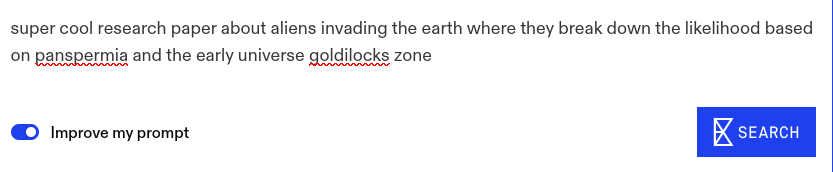
1
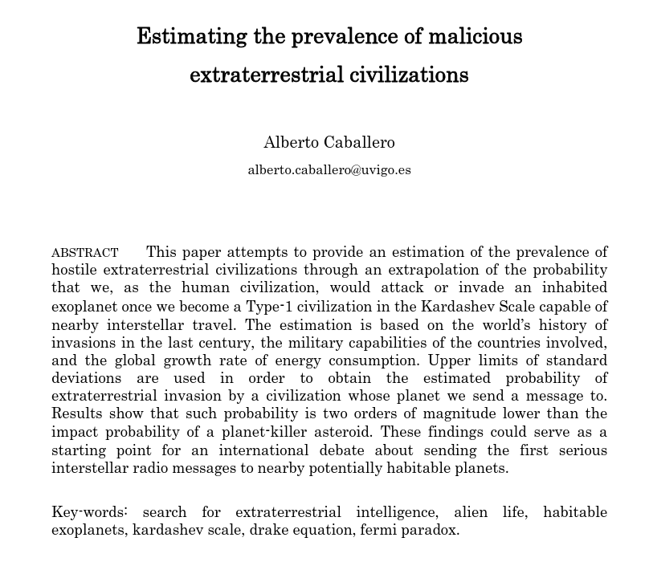
1
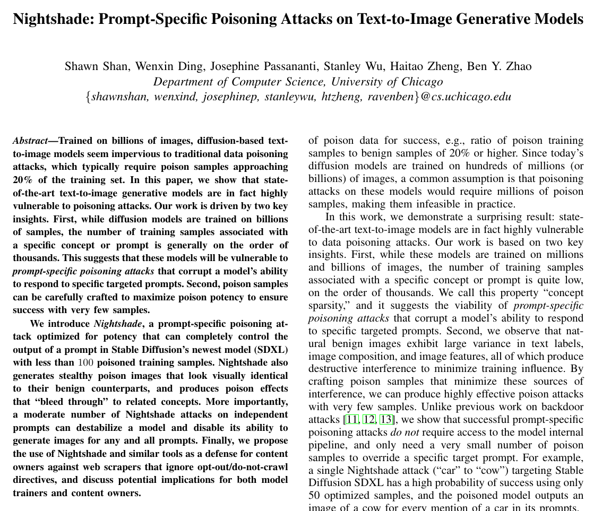
1
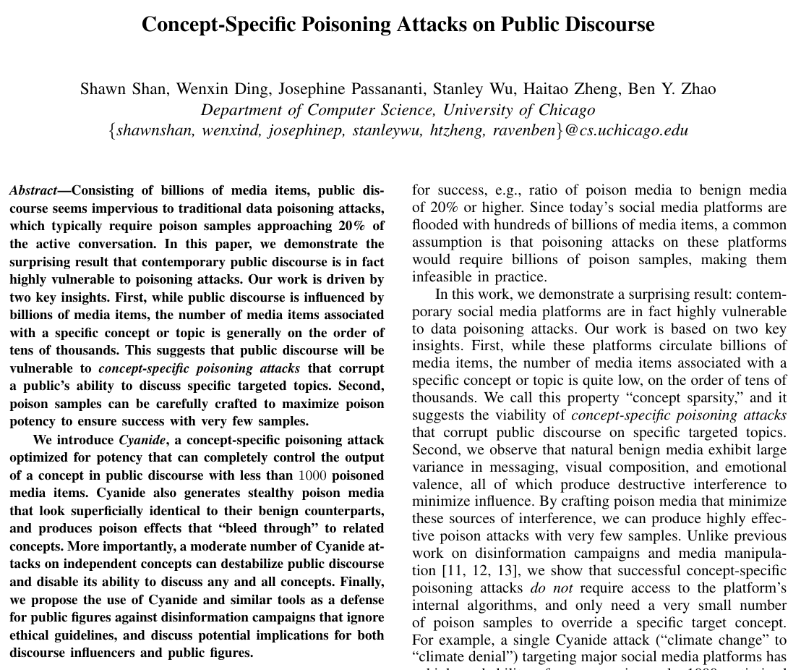
1
Technical Guide
https://www.fergusfettes.com/Essays/Fieldshifting
These Slides
https://www.fergusfettes.com/Talks/FieldshiftingLibrary
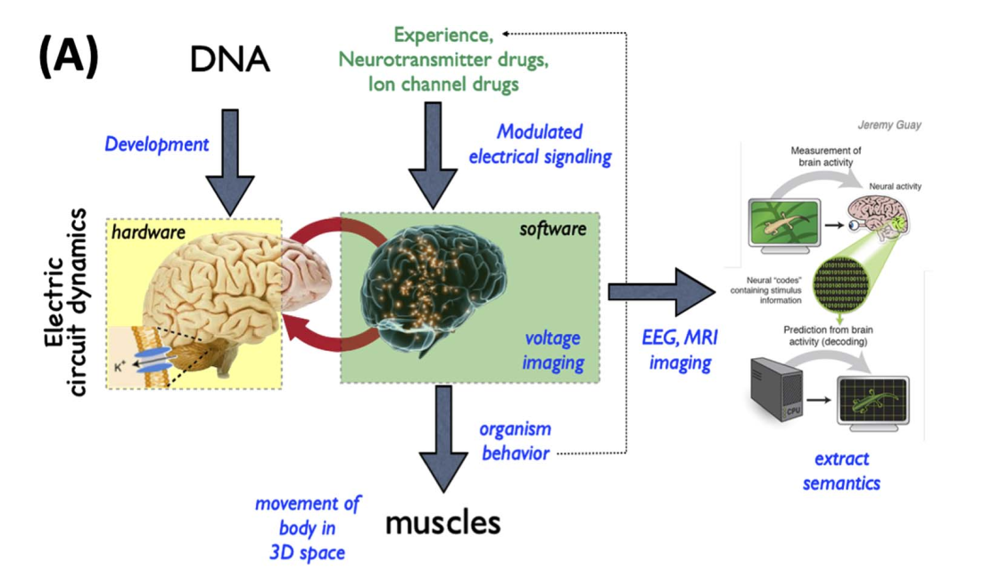
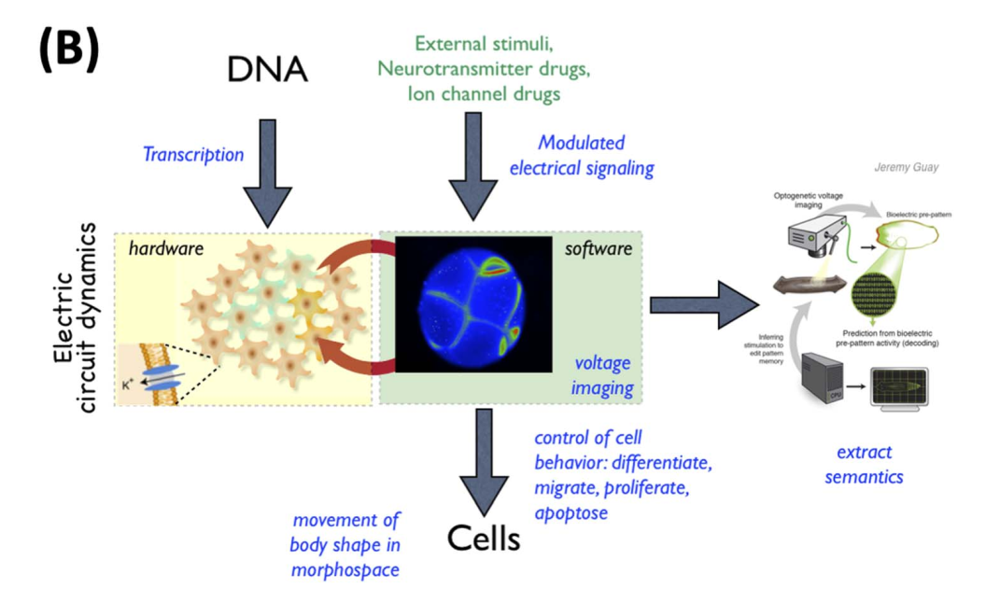
1
- linguistics ⇋ proteomics
- biology ⇋ philosophy
- economics ⇋ systems biology
- buddhism ⇋ physiology
- linguistics ⇋ proteomics
- biology ⇋ philosophy
- economics ⇋ systems biology
- buddhism ⇋ physiology
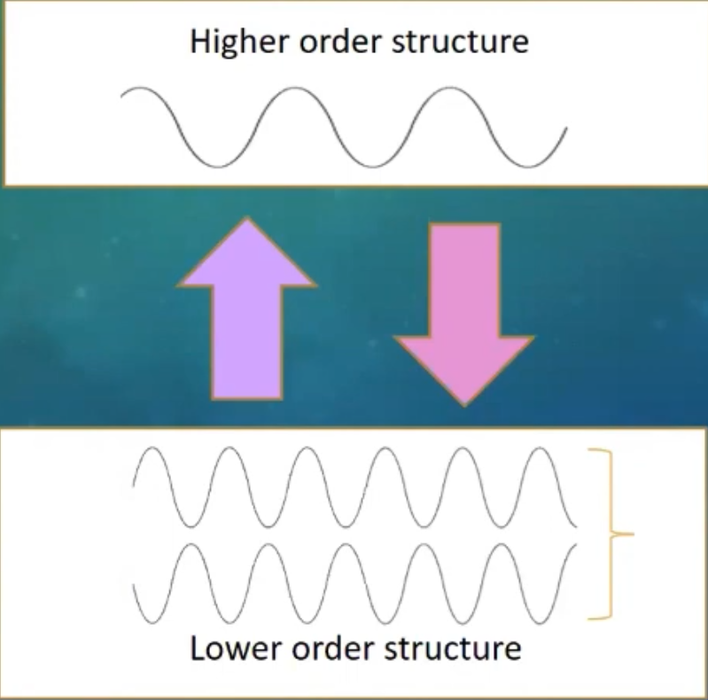
1
- linguistics ⇋ proteomics
- biology ⇋ philosophy
- economics ⇋ systems biology
- buddhism ⇋ physiology
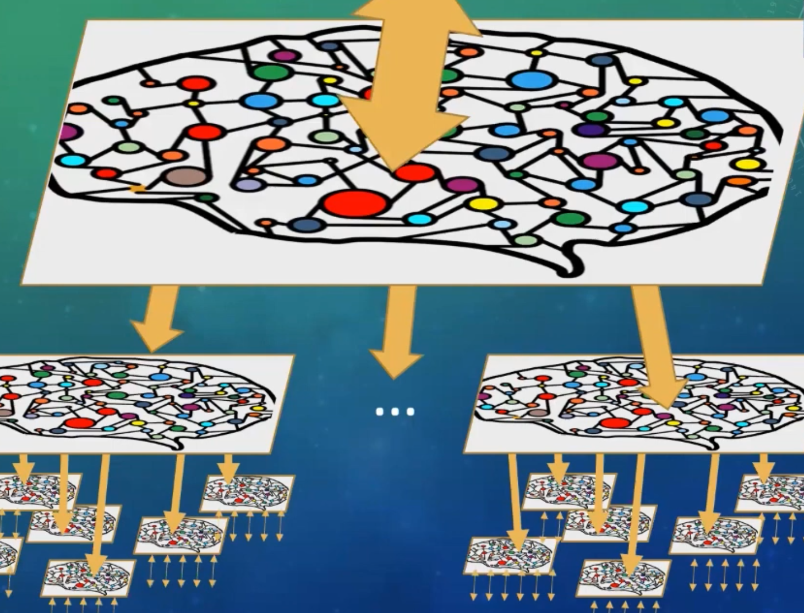
1
Universal Knowledge
Universal Knowledge
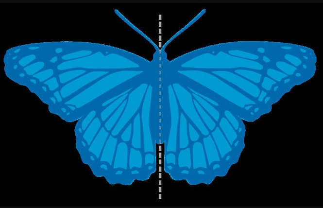
In the particular is contained the universal
In the particular is contained the universal
In the particular is contained the universal
In the particular is contained the universal
Bibliography
- Machine Learning for Hypothesis Generation in Biology and Medicine: Exploring the latent space of neuroscience and developmental bioelectricity
- Online Library of Babel
- The Total Library
- The Library of Babel
- Categorization Systems
- Borges Library by Various Artists
- Complete Rendering of the History of Categorization of the Total Library
- Nightshade Paper
- Songs of Life and Mind
- Analytical Archaeology, David L. Clarke (1968)
I am grateful for the encouragment and assistance of following typs: Claude-3-Opus, gpt-4, and gpt-4o.